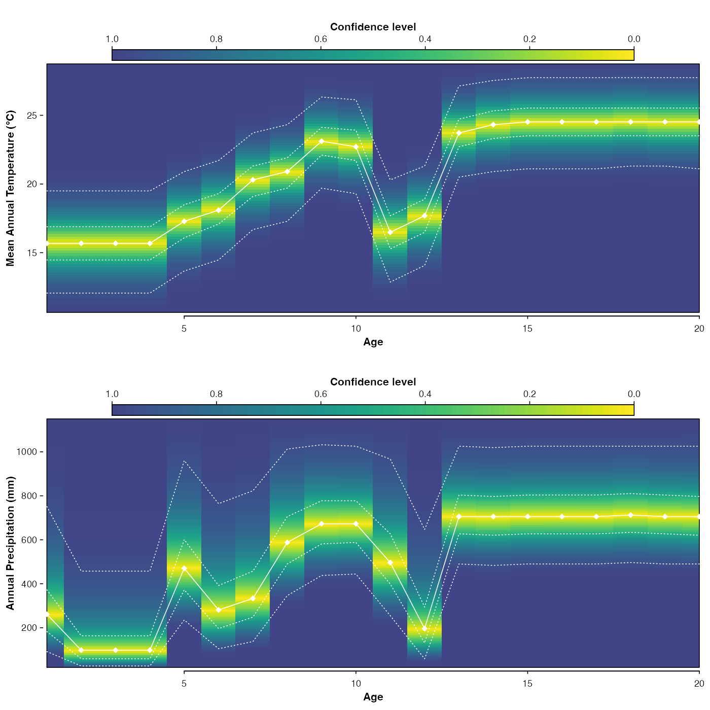

This function fits the climate response of the selected taxa to the selected climate variables.
crest.reconstruct( x, presenceThreshold = 0, taxWeight = "normalisation", uncertainties = c(0.5, 0.95), skip_for_loo = FALSE, verbose = TRUE )
| x | A |
|---|---|
| presenceThreshold | All values above that threshold will be used in the reconstruction (e.g. if set at 1, all percentages below 1 will be set to 0 and the associated presences discarded). Default is 0. |
| taxWeight | One value among the following: 'originalData', 'presence/absence', 'percentages' or 'normalisation' (default). |
| uncertainties | A (vector of) threshold value(s) indicating the error bars that should be calculated (default both 50 and 95% ranges). |
| skip_for_loo | A boolean that tells the |
| verbose | A boolean to print non-essential comments on the terminal
(default |
A crestObj object containing the reconstructions and
all the associated data.
data(crest_ex_pse) data(crest_ex_selection) data(crest_ex) x <- crest.get_modern_data( df = crest_ex, pse = crest_ex_pse, taxaType = 0, climate = c("bio1", "bio12"), selectedTaxa = crest_ex_selection, dbname = "crest_example", verbose = FALSE )#> Warning: The classification of one or more taxa into species was not successful. Check `x$misc$taxa_notes` for details.x <- crest.calibrate(x, geoWeighting = TRUE, climateSpaceWeighting = TRUE, bin_width = c(2, 50), shape = c("normal", "lognormal"), verbose = FALSE ) x <- crest.reconstruct(x, verbose = FALSE) plot(x)